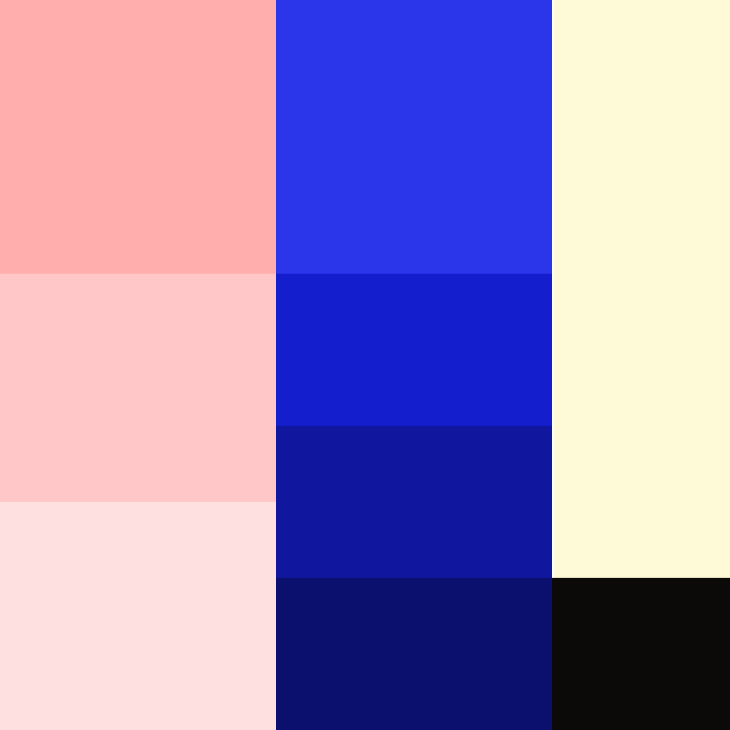

- Eddy Works
- Brand / Identity
Eddy Works
Role: Art direction and design
Eddy Works is a New Zealand startup developing software fittingly called Eddy. Put simply it's a platform for designing and running the processes that hold an organization together. A process is passed along and then reviewed. They asked for an identity that reflected the product itself and sat clearly separate from the other software in its category.
In fluid dynamics an eddy is a current that turns back on itself and keeps what it carries in circulation. The name was already a description of the product. The brand is built from that motion.


Inspired by an eddy, the logo circles in on itself.


The company being from New Zealand, traditional Māori design was naturally part of the research. The swoops are inspired by the motion of those designs, and the way they move in a continuous rhythm with no obvious start or finish. The swoops are not lifted, simplified or redrawn from Māori designs. They are drawn for Eddy and aim to give off the same feeling of motion without appropriating the source material.
Urbanist was chosen as the sole typeface, offering a large variety of weights and it covers the full Latin alphabet, which makes localizing into new markets one less thing to think about.